WHAT WE PROCESS
SEISMIC REFRACTION (SR)
Applications: Mapping subsurface geological structures, determining depth to bedrock, identifying fault zones. If combined with MASW results of the same area, elastic moduli can be calculated.
Industry Software: Rayfract, Pickwin, Plotrefa, Surfer, Oasis Montaj.
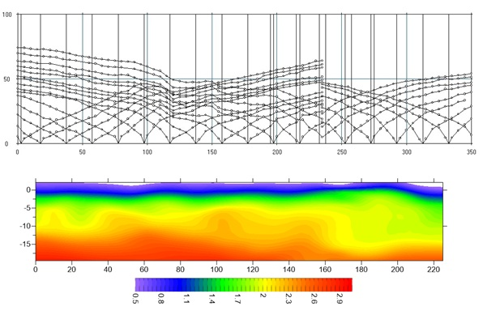MULTICHANNEL ANALYSIS OF SURFACE WAVES (MASW)
Applications: Assessing soil stiffness, detecting subsurface voids, mapping stratigraphic layers, calculating Vs30. If combined with Seismic Refraction results of the same area, elastic moduli can be calculated.
Industry Software: ParkSeis, SurfSeis, Geogiga Seismic Pro, Surfer, Oasis Montaj.
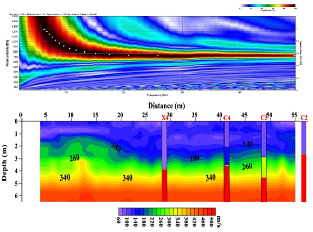GROUND PENETRATING RADAR (GPR)
Applications: Locating buried utilities, mapping archaeological sites, assessing concrete integrity, mapping geological layers, rebar mesh and its condition, voids/cavities.
Industry Software: ReflexW, GPR-SLICE, RADAN, GPRSoft, Prisom 2, Geolitix.
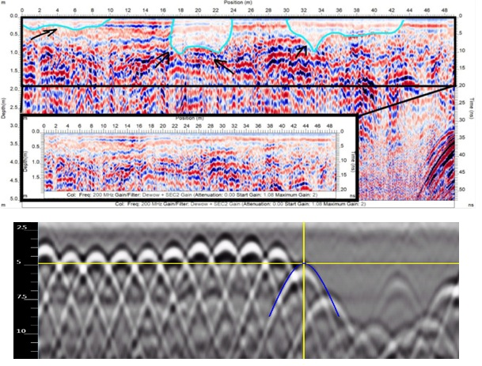ELECTRICAL RESISTIVITY TOMOGRAPHY (ERT)
Applications: Imaging subsurface structures, groundwater exploration, environmental site assessments, mapping stratigraphic layers, detecting cavities.
Industry Software: Res2DInv, ERTLab Studio, Earth Imager, BERT, Surfer, Oasis Montaj.
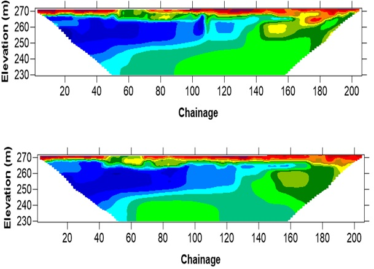ELECTROMAGNETIC SURVEY (EM)
Applications: Mapping subsurface conductivity variations, detecting buried objects, environmental contamination studies.
Industry Software: EMVision, WinGLink, EMACS, Oasis Montaj.
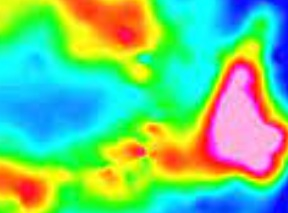TIME DOMAIN ELECTROMAGNETIC INDUCTION (TEM)
Applications: Mapping groundwater, mineral exploration, environmental site assessments.
Industry Software: PROTEM, ZondTEM1D, TEM-FAST 48HPC.
MICROGRAVITY SURVEY (GRAVITY)
Applications: MDetecting subsurface voids, mapping geological structures, monitoring volcanic activity.
Industry Software: Microgravity Survey Software, Oasis montaj.
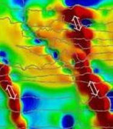MAGNETIC SURVEY (MAG)
Applications: Mineral exploration, archaeological investigations, detecting buried ferrous objects.
Industry Software: MagPick, GravMagPro, Oasis montaj.
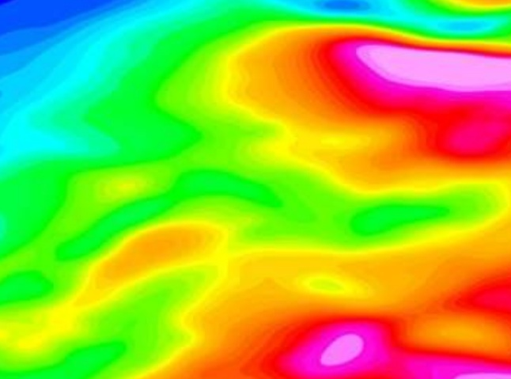PS SUSPENSION LOGGING (PS)
Applications: Measuring in-situ stress, evaluating rock mass properties, determining elastic moduli.
Industry Software: Pickwin, RG ML Digital Suspension Logging, GeoVista Seismic Suite.
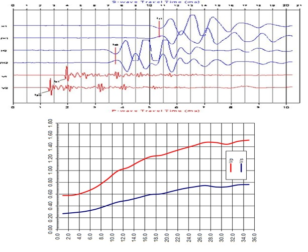DOWNHOLE SEISMIC TESTING (DHOLE)
Applications: Determining elastic moduli , Earthquake hazard site response studies, dam safety investigations, foundation studies.
Industry Software: Pickwin.
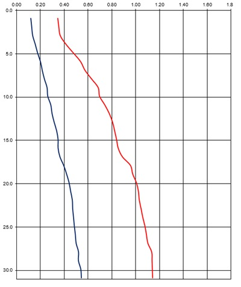CROSSHOLE SEISMIC TESTING (CHOLE)
Applications: Determining shear and compressional wave velocity profiles, evaluating dynamic soil and rock properties, seismic hazard assessment.
Industry Software: Pickwin.
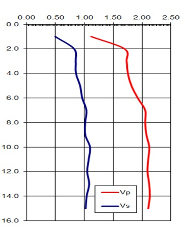CROSSHOLE TOMOGRAPHY (CTOMO)
Applications: Generating 2D/3D velocity images of subsurface anomalies, assessing the extent and severity of defects, imaging geological structures.
Industry Software: Pickwin, TomoXPro, Tomographic Imaging Software, GeoTomCG.
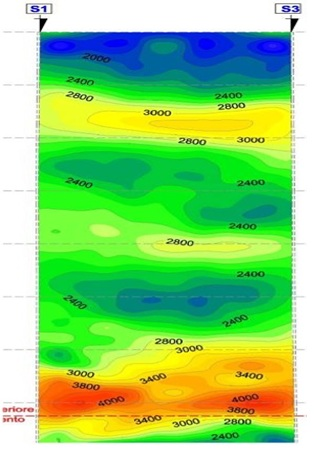FULL-WAVE SONIC (FWS)
Applications: Evaluating porosity, permeability, geo-mechanical properties, fracture identification, cement bond logging.
Industry Software: WellCAD.
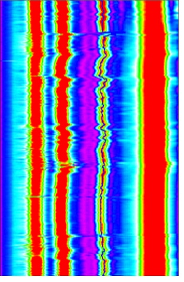ACOUSTIC TELEVIEWER (ATV)
Applications: Detailed structural information, fracture detection and evaluation, breakout analysis, detection of thin beds, determination of bedding dip, lithology and mineralogical characterization, casing inspection.
Industry Software: WellCAD.
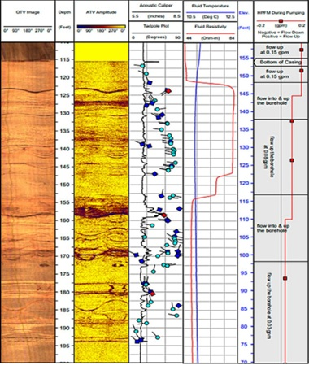OPTICAL TELEVIEWER (OTV)
Applications: Detailed structural information, fracture detection and evaluation, breakout analysis, detection of thin beds, determination of bedding dip, lithology and mineralogical characterization, casing inspection.
Industry Software: WellCAD.
BOREHOLE RESISTIVITY
Applications: Determining soil and rock properties, identifying stratigraphic layers, hydrocarbon reservoir evaluation, groundwater exploration, environmental site assessments.
Industry Software: WellCAD.

CALIPER LOG
Applications: Measuring borehole diameter, identifying lithology variations, assessing borehole conditions.
Industry Software: WellCAD.